Just you, God and Scripture.
Cardinal is built for reading Scripture, sitting with it, and talking to God. There is no feed to scroll, no streak to protect, and nobody watching what you read.
Free to read, always. There is no account to make.
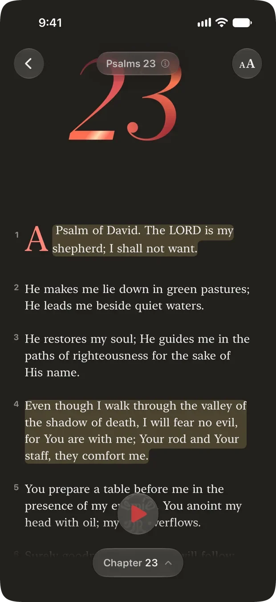
Why Cardinal exists
Bible apps have become social platforms, full of feeds and features that pull you away from simply reading the Bible.
Cardinal was built for one person, alone with Scripture, for as long as they want to stay. Each feature had to answer one question: does it help you read? So some familiar things are missing.
- NoFeed, comments, or profilesWhat you read and write is never shown to anyone.
- NoStreaks, badges, or missed-day guiltMissing a day costs you nothing, and no notification tells you that you did.
- NoAds, and no tracking across appsNothing about you is sold to advertisers.
- NoGate on readingThe Bible itself never sits behind a subscription.
Read
Plain modern English, from the first tap.
Cardinal opens on the Berean Standard Bible. There is nothing to set up and no plan to choose before you can read a verse.
- Seventeen translations. Eight live on your phone from the first launch and read offline, including the King James, Berean Standard, World English and Majority Standard Bibles. Five more are free and can be downloaded in full.
- Highlight the exact words. Long-press and drag across a phrase and only those words are marked, not the whole verse. When a phrase wraps onto the next line, the mark stays one continuous stroke with rounded corners, sitting on the letters.
- Search that respects the wording. Each translation words things its own way, so each carries its own search index. The five free streamed translations build theirs once you download them.
- Favorites and margins. Save a verse, or write a note that stays with the passage and is searchable in Bible order.
- It remembers where you stopped. The book grid carries a link back to the chapter you were last in, so picking the Bible up again takes one tap.
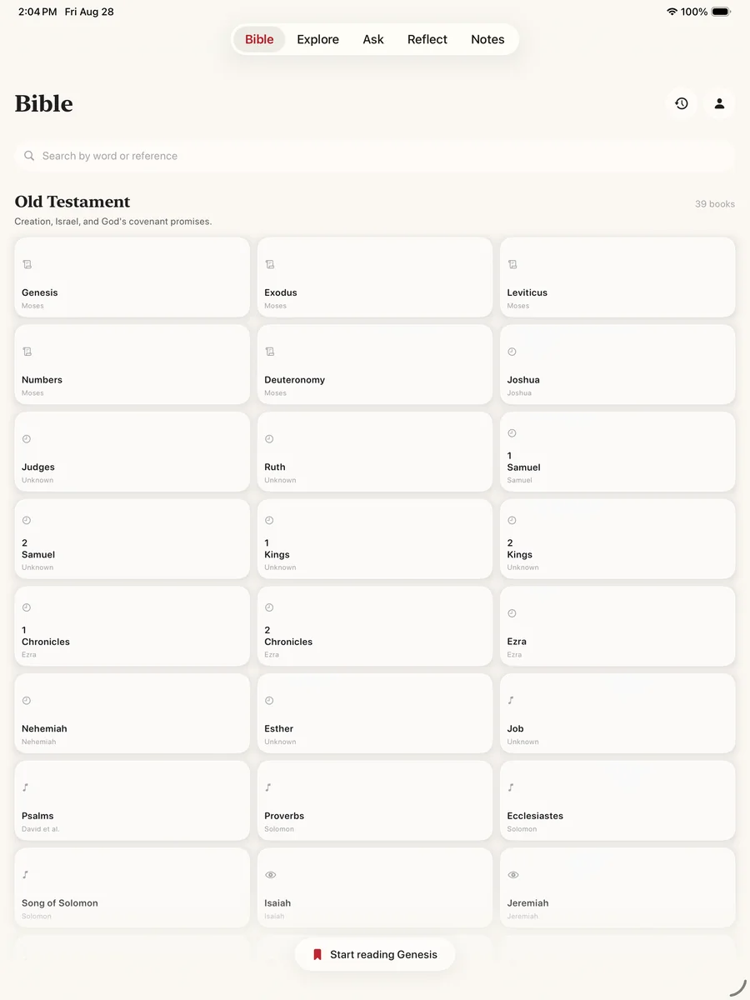
Four study tools, one tap from the verse.
The study tools are not a separate mode you have to go and find. Tap a word, a verse, or the chapter title, and they are already there. Three of the four need no connection at all.
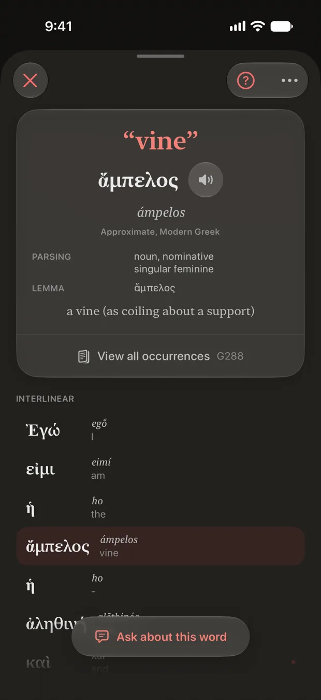
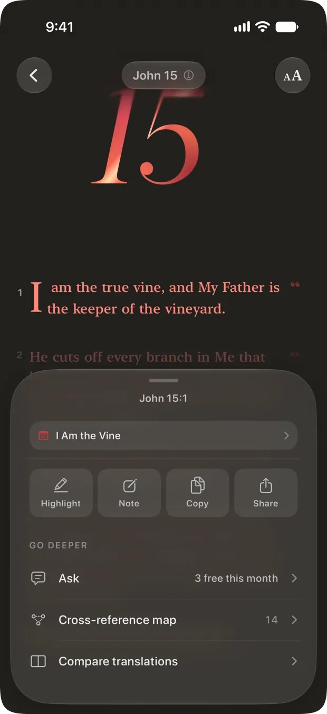
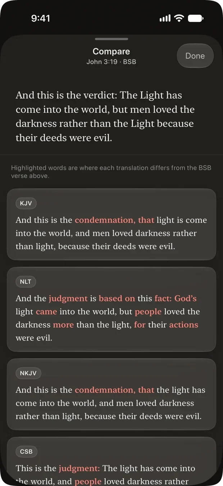
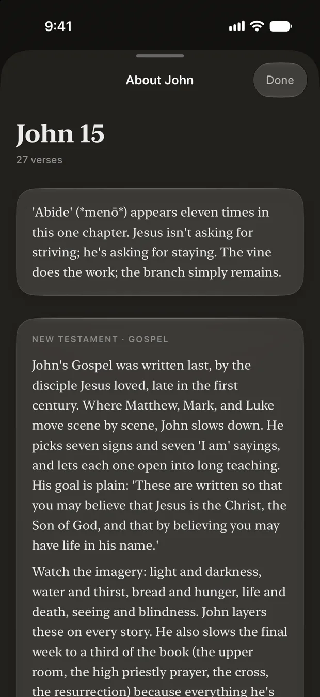
Ask
“What does that actually mean?”
Everyone hits a verse they do not understand. Ask, and get an answer drawn from the passage in front of you: cross-references, word studies, historical context.
- Thirty questions, answered in full, free. Why is there suffering? Did Jesus claim to be God? What happens when we die? Nothing to unlock.
- Three of your own each month. Free, and they renew every month.
- Honest about uncertainty. Answers say “this passage is often interpreted as,” not “this means,” and every one shows the verses it rests on so you can read the text yourself.
- Your licensed translations stay private. Publisher-licensed text is never sent to the model. It reads a public-domain rendering, and only the name of your translation travels.
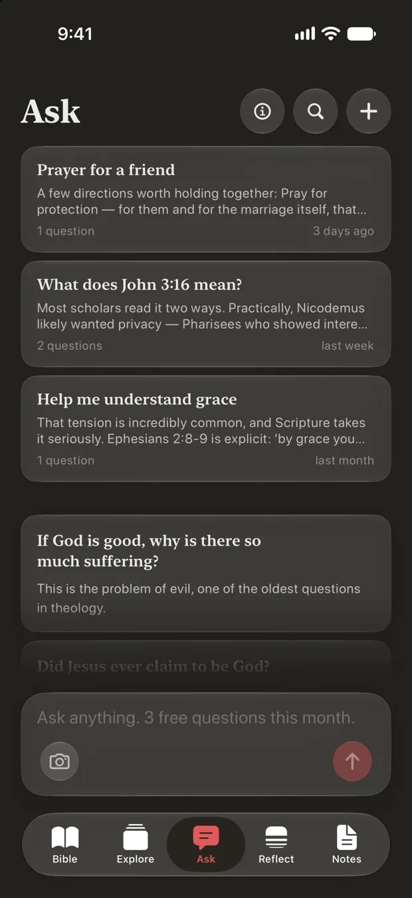
Your own path
Describe what you are facing, and get a reading plan built around it.
Say what you are going through in your own words and Cardinal builds a day-by-day path through Scripture around it. It costs nothing.
- In your own words. “Walking through grief.” “Waiting for news.” “A new baby, and no sleep.” “The Gospel of John, slowly.” Then choose how long, from a week to a year, and how much to read at a sitting.
- You see the whole path before you start. Every day, its passage and why it is there. Swap a day for a different passage, reorder them, or take one out, and the days renumber themselves.
- Built on your phone, where it can be. On an iPhone with Apple Intelligence the whole thing is shaped on the device. Your words and the path they produce never leave it.
- Checked against the text. The titles and notes are written by AI. Every reference in the path is verified against the Bible itself before you see it.
- It waits for you. A path moves forward when you finish a reading, never when the calendar does. Put it down for three weeks and you pick up at the next day.
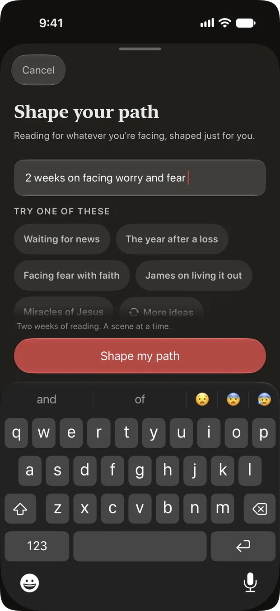
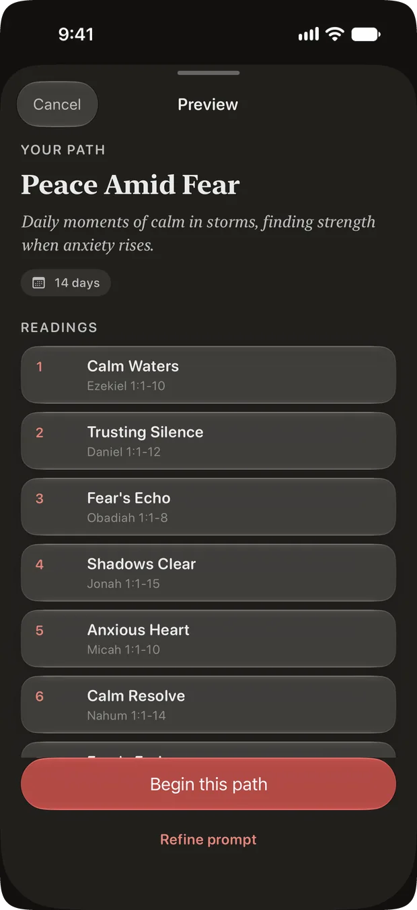
Reflect
One sitting a day, about fifteen minutes.
The Reflect tab holds one Quiet Time a day. Each one is a chosen passage of fifteen to twenty-five verses, the natural scene the text is built around, so you are never handed a whole chapter and left to it.
- Six steps. Pause, read, reflect, apply, pray, close. The same shape every day, so you stop having to decide how to begin.
- Nine curated paths. From the Story of Jesus in John, to thirty days in the Psalms, to the whole Bible in a year.
- An evening sitting. After seven in the evening a shorter one appears to close the day. It never moves your place in the path.
- A prayer list that remembers. Add what you prayed for at the close, and mark it answered when God shows up.
- New to reading on your own? Start here. It was designed for someone who has never done this alone before.
Your archive of past sittings is private and searchable.
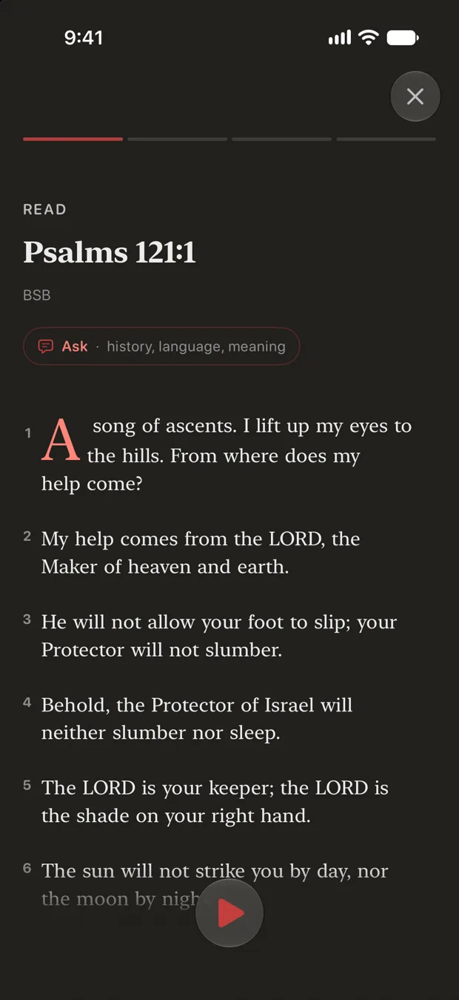
Memorize
Learn it by heart, without a scoreboard.
Two ways to practice, and a deck that works out which verses you are still learning.
- First letters. The shape of the verse stays on screen. The words go.
- Hidden words. Blanks out more of the verse on each pass, until you can say it from the reference alone.
- It asks how that went. Verses you are still learning come back sooner, waiting under “Ready to come back.” There is no streak to break.
- More than fifty curated packs. Grouped by what you are carrying: grief, anxiety, wisdom, thanksgiving. Or build a pack from your own verses.
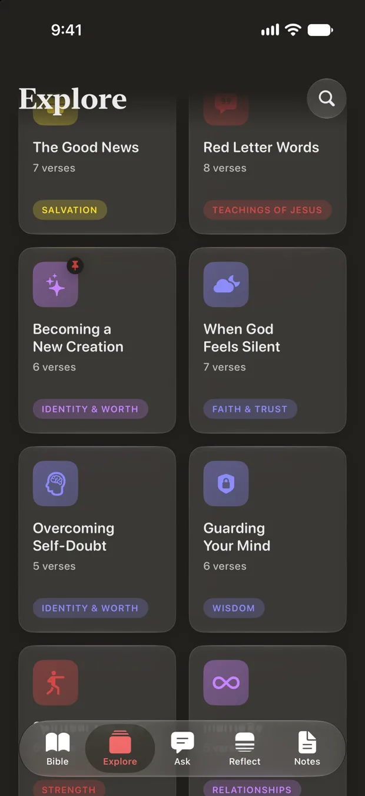
Threads
Someone in Scripture has already been where you are.
Twenty-four lives from Scripture, each told as the handful of moments that made it. They are filed by what they are about, since you usually arrive carrying a situation, not a name.
- Filed under what you are carrying. “The room you are afraid to walk into” is how you find Esther. “Burned out under a tree” is how you find Elijah. “Four days too late” is Martha.
- The whole Bible, drawn to scale. Each life is flown across a strip of the entire canon, all 31,102 verses of it, with every moment plotted where it falls. Obadiah is the sliver it really is, and the Psalms are a slab.
- Including the moments that land centuries later. Abraham’s last beat is in Hebrews, written some two thousand years after the rest of his life. The strip shows you that distance.
- Every moment opens the text. A few lines of writing, then one to three verses with a note on why each is there. The writing never quotes them; its job is to send you to the passage.
- A hundred and forty moments, free. Written for Cardinal, checked against the Bible reference by reference, and on your phone whether or not you have a signal.
Eight themes: fear, loneliness, grief, shame, waiting, purpose, belonging and mercy. Every life sits under two or three of them; David is under shame, mercy and purpose. See all twenty-four.
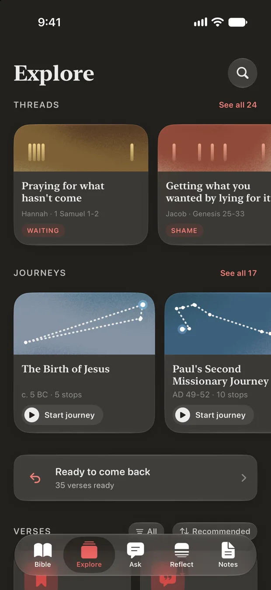
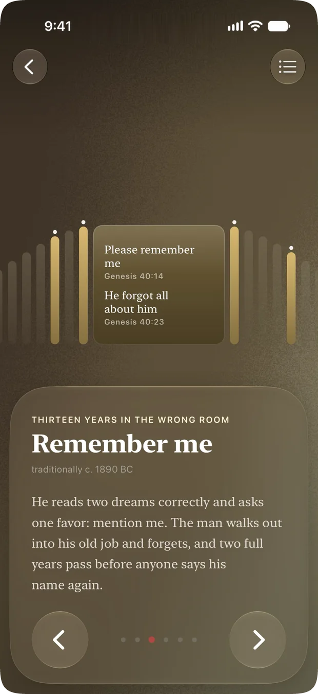
Journeys
Seventeen journeys, over the ground they happened on.
Paul’s voyages, Abraham’s road, the Exodus, Passion Week. Each one flies stop to stop across real 3D satellite terrain, so the distance between two places is the distance it was.
- The actual ground. Not an illustrated map. Lystra is the hill Lystra sits on, seen from above, with the route drawn across it.
- Every stop says what happened there. A short piece of writing, then the verses it rests on, which open straight into the reader.
- Or have it read to you. Each stop’s narration can be spoken aloud while the camera flies.
- Keep a place. Any stop shares as a card of the place itself, which is a better thing to send someone than a screenshot.
- All seventeen, for everyone. No subscription. The journeys ship inside the app; only the satellite imagery needs a connection.
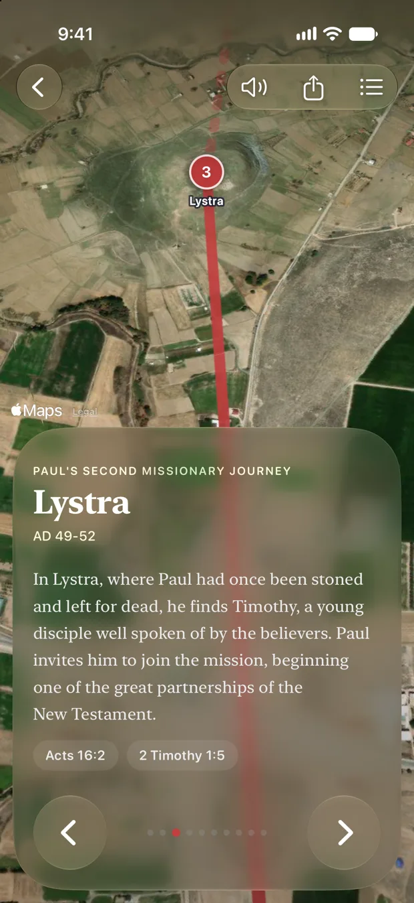
Notes
Built for the person preaching on Sunday.
Three kinds of notes for three different jobs. A study is what you build when you are the one teaching. A sermon note is what you take when someone else is. A verse note is a thought while reading, and it stays on the passage.
- Sermon notes shaped like sermons. A new one opens with Scripture and running notes. Big idea, main points with their own verses, Living It Out and action steps are there when you add them, in whatever order suits how you listen. Group them into a series and each one knows it is Part 2.
- A week of gathering, in one place. Whatever you find as you read goes onto one of seven shelves: passages and cross-references, words, people, places, illustrations, quotes, open questions. Or name the passage and what you are teaching, and Cardinal proposes what it already holds, each with a line on why it belongs. It works from bundled data on your phone, so it cannot cite what it cannot point at, and nothing enters the study until you tick it.
- An outline with room to write. Every point holds two things: the line you say out loud, and the prose underneath it, as long as it needs to be. The whole study exports as Markdown.
- Podium mode, for the ten minutes that matter. Read-only, because the one place you must not accidentally edit a sermon is while you are giving it. Type is sized for the distance to a lectern. Every passage is fetched when it opens, so a weak signal shows itself in the vestry while there is still time to pick up paper.
- Cardinal will not write your sermon. Ask it to dig deeper and it answers with cross-references, context and word studies. It does not draft. The study, the structure and the words stay yours.
Editing a study is part of Cardinal Pro. Reading one, exporting one and preaching from one never are, so a lapsed subscription never locks away years of preparation. How a week of sermon prep works.
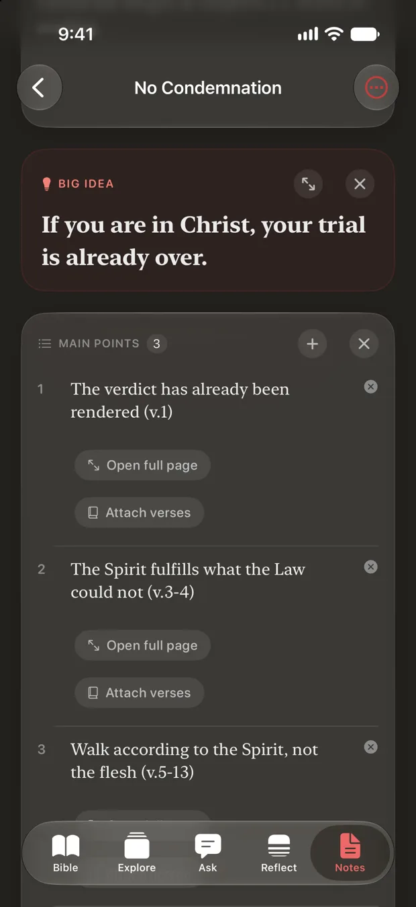
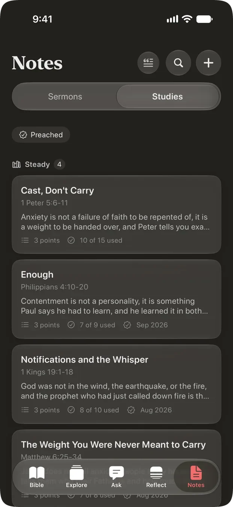
Everything else in the app.
All of it is included for everyone, with no subscription. Where one part of something needs Pro, it says so below.
- Listen
- Scripture read aloud, with the words lighting up in time with the narration and the page following on its own. Six narrators, a sleep timer, adjustable pace, AirPlay, and it keeps playing on the lock screen.
- Widgets
- A Verse of the Day, today’s Quiet Time passage, or your Memorize progress, on the home and lock screen, so the first thing you see in the morning is the Word.
- Apple Watch
- Four glances: the verse, the next passage, what is playing, and a recall drill. It works with your phone nowhere nearby. The complication shows the verse, not a number telling you how you are doing.
- iPad
- The same app, laid out for the larger screen. Good for a long sitting at a desk, or for reading two translations side by side.
- Scan a page
- Photograph a sermon slide or a bulletin and Cardinal pulls the references out of it, reading the picture on your device. Every one is checked against the Bible first, so a verse that does not exist never appears. Pick the ones you want and they go into your question in Ask.
- Works offline
- The eight bundled translations read and search with no connection at all, and the five other free ones do the same once downloaded. Memorizing, highlighting and note-taking work anywhere. Audio and Ask need a signal, and so do the four Pro translations, which their licenses keep stream-only.
From the App Store.
Three reviews, in full and unedited.
This thing is 3.6MB runs entirely on device, no cloud, no sub. This is the bible app for you, it will really help you memorize scripture, finally.
Very well designed and makes studying and memorizing scripture very easy. Would love to be able to add my own verses someday.
Personally, sometimes I just need something quick while I’m on the go. The practice verse challenge is the best, I just learned how to flip back and forth with the simple button layout when a hard one comes up!
Seventeen translations.
Thirteen of them are free, and they always will be. Reading Scripture never requires a subscription.
Free, and read fully offline
- King James
- Berean Standard
- World English
- Majority Standard
- Reina-Valera 1909
- Louis Segond 1910
- Almeida 1911
- 和合本 (简体)
Free, streamed or downloaded
- Luther 1912
- Elberfelder 1871
- Menge-Bibel
- Синодальный перевод
- 和合本 (繁體)
With Cardinal Pro
- New King James
- New American Standard
- Christian Standard
- New Living Translation
Licensed from their publishers, each with one free day to try. Their licenses do not let Cardinal store the text, so these four need a connection every time and cannot be searched offline.
Nine languages.
Every menu, book name and answer follows the language your phone is set to.
EnglishEspañolPortuguêsFrançaisDeutschРусский한국어简体中文繁體中文
Eight of the nine also read a Bible in that language. A Korean translation is not licensed yet, so Korean currently reads with an English text.
Nobody is watching you read.
What you underline, what you pray about, and what you ask are some of the most private things a person has. Cardinal is built so that they stay that way.
- No accountNo name, no email, no sign-in. Nothing to create before you can read.
- No ads, and no cross-app trackingNo advertising identifiers, and no permission prompt asking to follow you elsewhere.
- Your writing is yoursSittings, notes, prayers and highlights stay on your device, and with iCloud on, in your own private iCloud. They are not on a server anyone here can read.
- Only what has to be sentPhotos you scan are read on your device and never uploaded. Payment is handled entirely by Apple.
Free, and what Pro adds.
Cardinal is free to download and free to use, and reading the Bible stays free. A subscription covers the two things that cost money to run: the translations licensed from their publishers, and the AI behind Ask.
Cardinal
Free
- The whole Bible in thirteen translations
- Quiet Time, and every curated path
- Describe your own reading path and have it built for you
- Memorize, and every verse pack
- All seventeen Journeys
- Sermon notes, verse notes and the prayer list
- Audio, widgets and the Apple Watch app
- Thirty questions answered in full, plus three of your own each month
Cardinal Pro
Optional subscription
- Everything in the free version, plus:
- Ask, beyond the free monthly questions
- The NKJV, NASB, CSB and NLT
- Two translations side by side
- A deeper reflection on any sermon point
- Build and edit your own studies
A study you have already written stays readable and exportable even if a subscription lapses.
Pro is optional, and you decide inside the app. The App Store shows what it costs where you are.
Questions people ask first.
The short answers, before you download anything.
Is Cardinal free?
Yes. Cardinal is free to download and free to use, with no account and no sign-in. Reading the Bible is free in thirteen translations and always will be. Quiet Time, Memorize, Threads, Journeys, audio, notes, widgets and the Apple Watch app are all included for everyone. Cardinal Pro is an optional subscription covering the four translations licensed from their publishers, unlimited use of Ask, side-by-side reading, and editing your own studies. The App Store shows what it costs where you are.
Can I study the people in the Bible?
Yes, and it is free. Threads tells twenty-four lives of Scripture as the handful of moments that made them, browsed by what they are about rather than by name: fear, loneliness, grief, shame, waiting, purpose, belonging and mercy. Esther is under “the room you are afraid to walk into,” Elijah under “burned out under a tree.” Each life is flown across a strip of the whole Bible with its moments plotted where they actually fall, and every moment offers the verses it rests on. The twenty-four are Abraham, Daniel, David, Elijah, Esther, Gideon, Hagar, Hannah, Hosea, Jacob, Jeremiah, Job, Jonah, Joseph, Martha, Mary, Moses, Naomi, Nehemiah, Paul, Peter, Rahab, Ruth and Solomon.
Do I have to make an account?
No. There is no name, no email, no password and no sign-in anywhere in Cardinal. You open the app and you are reading. Your sittings, notes, prayers and highlights live on your device, and with iCloud turned on, in your own private iCloud.
Does Cardinal work offline?
Yes, in thirteen of the seventeen translations. Eight are bundled with the app and read and search with no connection at all: the King James, Berean Standard, World English and Majority Standard Bibles, Reina-Valera 1909, Louis Segond 1910, Almeida 1911, and 和合本 (简体). The five other free translations stream a chapter at a time and keep it, and you can download any of them in full from the translation picker. The four Pro translations are the exception: their publishers do not permit storing the text, so those read from a connection every time and are never searchable offline. Highlighting, notes and memorizing work anywhere.
Are there streaks, badges or a feed?
None of them. No feed, no comments, no profiles, no streaks, no badges, and no notification telling you that you missed a day. Nothing in Cardinal keeps score, because nothing in it is performed for anyone else.
Which translations are included?
Seventeen. Eight are free and fully offline, five more are free and streamed (Luther 1912, Elberfelder 1871, Menge-Bibel, Синодальный перевод and 和合本 (繁體)), and four come with Cardinal Pro: the New King James, New American Standard, Christian Standard and New Living Translation. Each Pro translation includes one free day to try it, once.
Can I build my own reading plan?
Yes, and it is free. Describe what you are facing in your own words, choose a length from a week to a year, and choose how much to read at a sitting. Cardinal builds a day-by-day path and shows you the whole thing before you begin, so you can swap a passage, reorder the days or remove one. On an iPhone with Apple Intelligence the path is built entirely on the device. A path advances when you finish a reading rather than when the calendar does, so a gap never leaves you behind.
Does Cardinal track me or show ads?
There are no ads, no advertising identifiers and no tracking across other apps, which is why Cardinal never shows you the permission prompt asking to follow you. What you underline, pray about and ask is not on a server anyone here can read. Photos you scan for a verse are read on your device and never uploaded, and payment is handled entirely by Apple. There is anonymous, aggregate product analytics and Apple Search Ads install attribution; neither identifies you.
Which devices does it run on?
iPhone, iPad and Apple Watch, on iOS 17 or later. The iPad layout uses the larger screen, including reading two translations side by side. The Watch app has four glances and works with your phone nowhere nearby. Cardinal is not on Android today.
Is what I read sent to an AI company?
Only what you deliberately ask. When you use Ask, your question and the surrounding passage are sent to be answered. Text licensed from a publisher is never sent: the model reads a public-domain rendering, and only the name of your translation travels with the question. Your notes, prayers, highlights and reading history are not part of it.
Read Scripture, sit with it, and talk to God.
Free on iPhone, iPad and Apple Watch. Open it and you are reading.
Download on the App Store